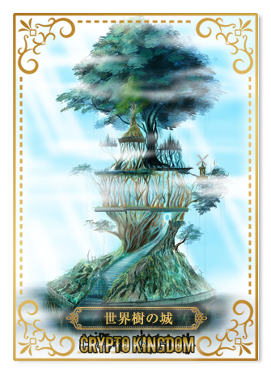

このゲームの目的は、城を育てることでさまざまなNFTやトークンを手に入れることにあります。
人物NFTは自動的に城に配置され、城の成長や領土の拡大に貢献します。
それぞれの人物NFTにはレアリティと特殊な能力があり、高レアリティのものほど城の成長や領土の獲得などに大きく作用します。
獲得した領土は新規プレイヤーが城を建てるときに貸し出す事ができ、貸し出している最中は年貢を受け取ることができる他、自分の領土が広がるにつれてより多くのトークンを産むことができるようになります。

すべてのゲームプレイは自動的に進行します。
最初に、トークンを購入してステーキングを開始すると、毎時間ステーク報酬としてトークンを受け取ることができるほか、ステーク量に応じた枚数の人物NFTがランダムに入手できます。
人物NFTを保有していると、自動的にさまざまな様式の城が建設されていきます。
建設された城には、所有NFTに応じて食糧・兵力・建設力・生産力といったステータスが割り振られ、時間経過でそれぞれのステータスが上昇します。
城の持つそれぞれのステータスに応じ、時間経過で新しい領土やトークンが入手できます。
プレイ中に獲得したあらゆるNFTはマーケットに出品することができます。
ステーキングによって手に入るランダムな人物NFTももちろん売買が可能なので、不要なNFTやプレセール特典のNFTを売却して、足りないステータスを底上げするNFTを購入配置するなどといった使い方ができます。
人物NFTには数種のジョブがあり、各ジョブに3つのレアリティが設定されています。
さらに、人物NFTの持つ特殊能力の効果やステータスはランダムに決定されるため、完全に同じ能力を持つNFTは滅多に存在しません。
ここでは3つのジョブとその特殊能力を紹介します。